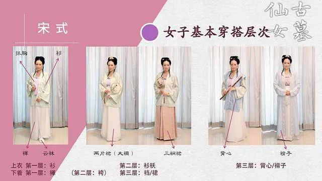
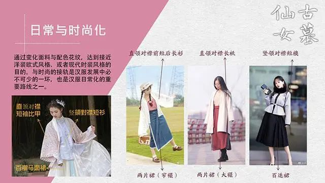
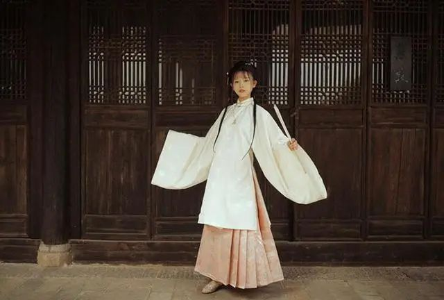
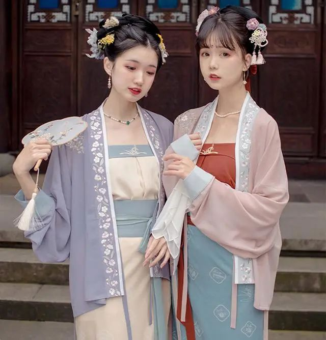
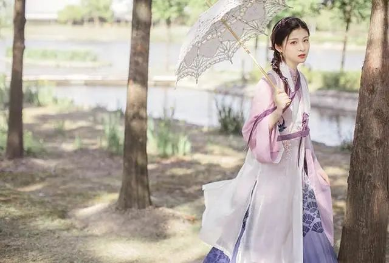

汉服百科 汉服咨询
[汉服资讯]不会吧不会吧，现在还有人认为汉服发展不起来？
- 五月前
- 喜欢:0
- 浏览:318
 汉服网
汉服网
1、2013年11月，西塘汉服文化周举办，由著名的作词人方文山发起。2018年农历三月初三，第一届中国华服日的举办。 此外，11月22日是汉服出行日，全国各地都会有无数的汉服爱好者走在街头。
这三个是目前与汉服相关的最具代表性的活动，每年如期兴行。
还有其他的地区活动以及景区出台的优惠，可以说一年间，与汉服相关的活动，超过十个。
另外，有一个关于汉服销售的统计，在淘宝，2019年汉服市场规模超过20亿元，并且保持着每年150%左右的增速。

我举的这些，想说的只一点，汉服发展不可能出现中道而废，戛然而止的情况。
前不久，有人反对我的观点，说你这样想，汉服发展不起来。
话得拆开来，先是他不同意我的话，认为后果是汉服发展不起来。
我的第一个念头，不是观点没有被认同，而是奇怪，这个人活在2010年，还是2003年。
实在很难相信，2020年还有人觉得，对汉服提出一个观点，等于汉服发展不起来。
现在的汉服市场之大，参与者派别之多，不是几句话能概括的。
一个人若认为“只有按照我想的这样，汉服才能发展”，说明他根本不了解汉服的现状。
现今的情况，既不能让某个年销量破亿的汉服商家消失，也无法说服无数的汉服爱好者放弃汉服，也阻止不了汉服新人入坑，供需一直在扩大的情况下，汉服的前景一片光明。

2、汉服的发展是相当曲折的。 早期的汉服同袍认为汉服不同于其他任何民族服饰，不但要严肃的穿它，认清它的样子，还要学习各种古代知识。
当时的推广过于慷慨激昂，如“同袍”一词的来意，“岂曰无衣，与子同袍”，像上战场充满斗志，但对路人来说是激进的跟邪教一般
所以汉服考据党、明粉、极端化的汉服党、汉服黑、还有诸多忠装反、反装忠的路人形成一种混战局面。
当时我的看法像前面这位说的，汉服发展不起来，瞧瞧这不可开交的局面，没戏了。
查到的资料显示，09年前汉服推广走到了困境，具体原因我不知，想来跟吵得太凶有关系。

不过，09年之后有了转折，淘宝崛起。我一直觉得淘宝对汉服的推广意义重大。
之前无非是一些同袍自制汉服，发各种汉服照到论坛推广，普通人多接触不到，像一个空中楼阁，自娱自乐
而淘宝发展后，选择线上购衣的人越来越多，汉服商家在淘宝积极谋求发展。
商家是逐利的，为推广衣服，为吸引潜在的消费，他们能动用一切听上去不错的文案，打出价格战，当然也能把汉服包装的更好，跟市面上任何一件花哨吸睛、价格又便宜的时装一样。
不是汉服同袍改变了推广思路，而是商业资本的注入促进了汉服发展。知名的汉服大店几乎都在淘宝。

越来越多的人发现汉服挺好看，又容易买到。淘宝的返图评价，以及各种开箱测评视频使得汉服的使用人群逐渐扩散开来。
如今又有抖音快手等各种短视频APP，可以说只要你无意间看了一个汉服相关内容，接下来到处都会推荐你关于汉服的东西。
当下的大数据推荐就是在刺激你消费。除非你从骨子里厌恶汉服，把它百分百屏蔽，否则一定能感觉它无处不在，哪怕你一直认为自己不需要汉服，也最终产生念头，可以买一件随便穿穿，拍拍写真。
这几年汉服发展甚至供不应求，出现一个热词“汉服，打钱”。
只要是汉服就容易有人买单。只要做的衣服看起来像汉服，或者形制是对的，但版型和做工很差，依旧有人要。
汉服已经服装界的一个红利。
我不止一次的发现，自己关注了六、七年，一直卖时装的服装店在当下推出汉服，虽然款式有争议，恰恰证明了汉服的影响力。在十年间，它们卖了形形色色的衣服，可能创店时连“汉服”一词都没听过，现在却开始出品汉服。
3、除了商家营销，还有时代下大众生活水平的提高。
我曾在超市听到一个母亲吐槽自己的初中女儿，说她人胖，还喜欢买汉服，汉服都很宽大，穿起来更肥了。
听上去是抱怨，其实是母亲的爱。经济能力让母亲没有阻止女儿买她不理解的衣服。
所以，时代的富裕，让90后，00后成为汉服消费的主力军。

迅速发展的汉服像时尚潮牌一样，理念变革也非常快。
过去统一的汉服，形成了不同的风格，有的人偏日常混搭，有的人偏复古。
十年前没人会推荐的汉洋折衷（汉服与西洋古典单品结合混搭）在19年也形成了潮流，穿汉服可以烫发扎马尾，配玛丽珍鞋。
时下仍有人认为穿汉服应该配簪发类发饰和布鞋，其他的搭配如英国的礼帽，他实在看不习惯。
如果他说汉服这样变得不伦不类，汉服不能这样，会失掉传统面目。在当下，只能作为一家之言。
汉服发展今天，依旧没有杜绝“吵”。
汉服群体分了好凡个类。有的人只在意哪款汉服更仙，拍照更好看。不在意汉服形制，甚至山正不分。
另一些人同样专注外在穿搭，分享汉服的日常搭配，审美更高级，拒绝山寨和形制错误的汉服。
还有人仍希望通过汉服引导大众关注古代文化，认为衣服不重要，后者才是关键。
汉服的主次排位和高低贵贱，使它每次辩论都相当激烈。
但是，一个事物无人问津才是惨烈的，争论中前行是向上的状态。汉服早年的很多观点都在时代中被抛弃了。
我一直都有说，时间会给出答案。
上一代人从来就没听过汉服。而现在的小孩子不但听过，还可能穿过汉服。
小孩子只要他知道汉服两个字，哪怕他长后后不穿汉服，对服饰的记忆，就像他穿过的任何现代时装等，会形成一个固定印象。更何况不可能所有小孩子长大以后都不喜欢汉服。
汉服像其他衣服成为时不时出现大众眼前的衣服，意味着它已经普及了。
当然有人认为：我想像的汉服复兴不是这样的，我希望人人都穿汉服，满大街如同一个古风江湖一样。
或者认为：大家穿的轻飘飘的又不方便的汉服，以前是贵族穿的，先把《清明上河图》里的平民汉服普及开来再说。
这些都只能算当下汉服大势中的个人观点，就像最开始提的有人不赞同我的观点。是与否年年存在，但阻碍不了汉服的发展。
点点赞赏，手留余香
还没有人赞赏，快来当第一个赞赏的人吧
嗨！朋友
所有的伟大，都源于一个勇敢的开始
☀文章聚合
-
[汉服形制]汉服的基本款式 - 直裰
2020/03/25 -
[汉服形制]汉服最常见的结构体系 - 饰件
2020/03/25 -
[汉服资讯]“唐代仕女”现身杭州西湖景区 重拾“以 胖为美”的审美观
2020/03/25 -
[汉服网]其余红妆-中国古代汉族女子妆容之七
2020/03/25 -
[汉服百科]汉服最全的保养与洗涤技巧，你知道吗？
2020/03/25 -
[美女]一瞬芳华
2020/03/25 -
[汉服资讯]汉服商家联合微店Park打造西湖文化节
2020/03/25 -
[美女]严冬浓妆刺绣紫蓝色汉服齐胸襦裙
2020/03/25 -
[美女]秋日游园
2020/03/25 -
[汉服文化]明末一代红颜柳如是，站在历史肩膀上的纯爷们儿
2020/03/25